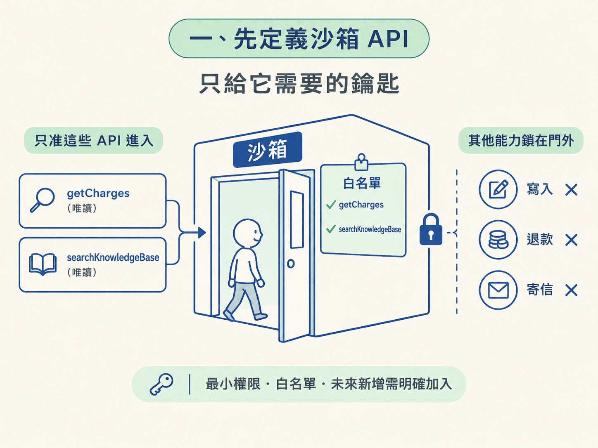
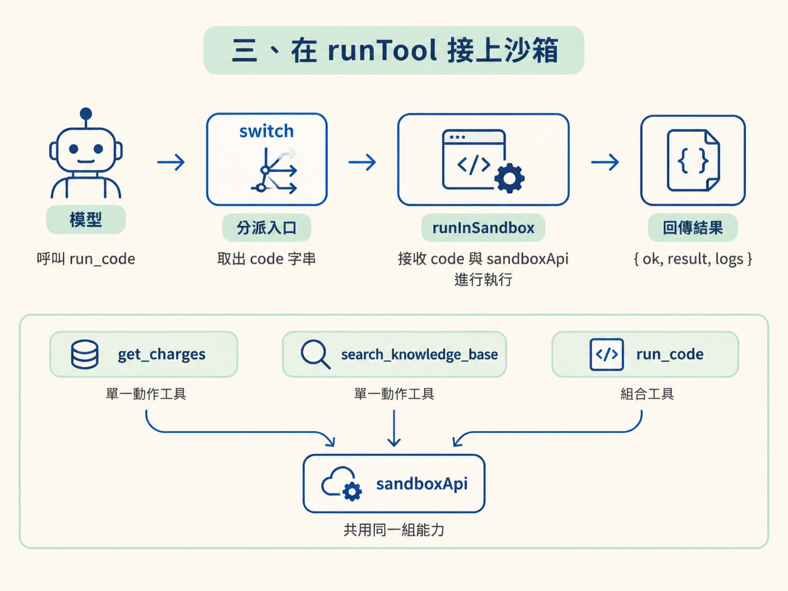

沙箱已經能執行模型寫的程式，也能回傳結果與 log；但對 agent 來說，它目前就像一間沒有門牌的房間：房間存在，agent 卻不知道怎麼進去。
要讓模型真的用上沙箱，需要完成兩個接線動作：先告訴模型有一支 run_code 工具，再把模型送進來的程式交給沙箱執行。這也是 harness 加入新工具時的固定流程：先定義工具，再處理工具。
這一節會定義沙箱 API（getCharges、searchKnowledgeBase）與 run_code 工具，並在 runTool 的 switch 中接上 runInSandbox，讓 agent 用一段程式取代一串工具呼叫。
沙箱不是什麼都能碰。只有你明確交給它的函式，沙箱裡的程式才能呼叫。因此第一步是建立一份 sandboxApi，列出這個退款客服用例真正需要的能力。
import { CHARGES, searchKB } from "../tools/charges";
export const sandboxApi = {
// 依顧客編號取回扣款紀錄（示範用的假資料）
getCharges: async (customerId: string) => {
return CHARGES.filter((c) => c.customerId === customerId);
},
// 查支援知識庫，取得退款政策
searchKnowledgeBase: async (query: string) => {
return searchKB(query);
},
};getCharges 會從假資料中篩出指定顧客的扣款紀錄；searchKnowledgeBase 則沿用既有的知識庫搜尋邏輯。
這裡有一個重要的重構：搜尋實作被抽成獨立的 searchKB helper，讓原本的工具與沙箱共用同一份程式碼。否則相同的比對邏輯複製兩份，日後修改時就可能只改到其中一邊。
把 API 獨立列出來，也就是在實作最小權限。沙箱能用的函式只有清單上的這幾支，不多不少。未來若要增加能力，就必須明確把它加入清單；這個動作本身就是一道防呆。

run_code：把使用規則告訴模型接著定義模型看得到的工具。它和其他工具一樣，透過 description 與 inputSchema 說明使用方式：
import { tool } from "ai";
import { z } from "zod";
export const tools = {
// ...其他工具
run_code: tool({
description:
"當需要算術、日期比對或資料整理時，用這個工具跑一段 JavaScript。" +
"code 是一個 async 函式的主體，可以用 await tools.getCharges(...) 與 " +
"await tools.searchKnowledgeBase(...)，用 console.log 記錄過程，" +
"並用 return 回傳任何 JSON 值。",
inputSchema: z.object({
code: z.string().describe("以 async 函式主體形式撰寫的 JavaScript"),
}),
}),
};description 是模型決定是否使用這支工具的主要依據，因此至少要交代三件事：
code 應該寫成什麼形式，也就是 async 函式的主體。tools.*，目前是 tools.getCharges(...) 與 tools.searchKnowledgeBase(...)。最後一點尤其重要。若沒有說明可用的函式，模型可能會寫出 getCharges(...)，但這個名稱在沙箱裡並不存在；加上 tools. 前綴，才會呼叫到正確的 API。
inputSchema 則保持單純：這支工具只需要一個字串欄位 code，用來承載整段程式。
runTool 接上沙箱工具定義完成後，模型只是看得到一張「菜單」，還需要執行入口真正出菜。在這個 harness 裡，所有工具都集中由 runTool 透過 switch 分派：
export async function runTool(toolName: string, inputs: any) {
switch (toolName) {
case "run_code":
return runInSandbox(inputs.code, sandboxApi);
case "get_charges":
return sandboxApi.getCharges(inputs.customerId);
case "search_knowledge_base":
return sandboxApi.searchKnowledgeBase(inputs.query);
default:
throw new Error(`unknown tool: ${toolName}`);
}
}模型呼叫 run_code 時，switch 會取出它傳來的 code，再連同 sandboxApi 一起交給 runInSandbox。上一課的 options 是選填的，所以這裡只傳兩個參數，timeout 會使用預設的兩秒。

如果某個高風險任務需要更短的執行時間，可以在這裡補上第三個參數：{ timeoutMs: 500 }。限制放在執行入口，代表每次實際接線時都能清楚控制它的範圍。
三個 case 的差異也很清楚：
get_charges 與 search_knowledge_base 是單一動作工具，模型一次呼叫一支。run_code 是組合工具，模型呼叫一次，程式裡可以串起多個動作。sandboxApi，因為它們共享的就是同一組能力。因此，新能力接進 harness 時，可以固定記住這個節奏：先在 tool() 裡說清楚模型能怎麼用，再到 runTool 裡決定它實際怎麼執行。
getCharges 與 searchKnowledgeBase。searchKB helper，讓舊工具與沙箱共用同一份實作。run_code 工具的關鍵在 description：要說明用途、程式形式，以及可呼叫的 tools.*。runTool switch 是執行入口，負責把 run_code 導向 runInSandbox。現在模型有了一間能執行程式的房間，也知道入口在哪裡。下一步就是用退款情境驗證這條路：看看模型是否會主動寫程式，以及為什麼讓程式實際算出數字，比只靠模型自行推算更可靠。